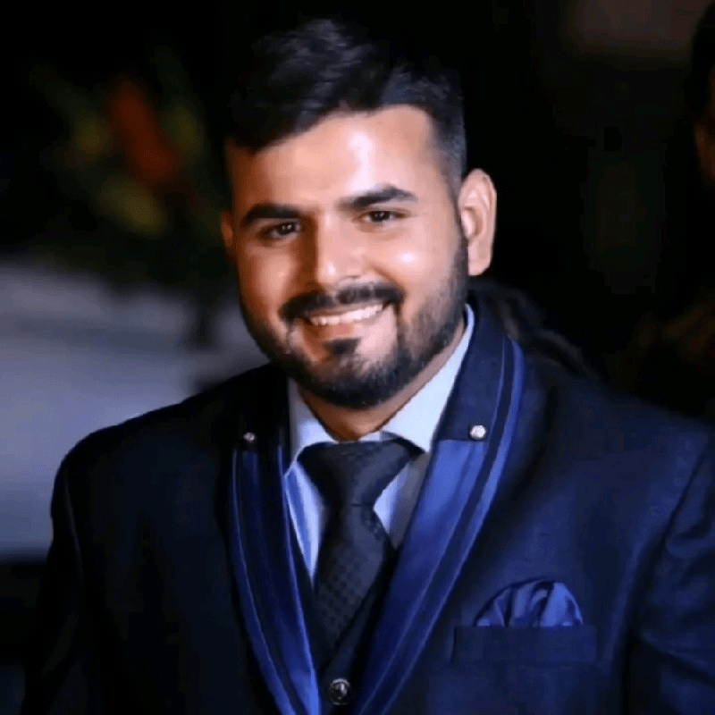

Nitin Manocha
Associate Director – Quality Assurance | KAMS Global
🚀 Aerospace & Defense Strategist | Quality Assurance | Program Management | AI-Driven Decision Analytics.

LinkedIn |
Email |
About Me
I am an expert in aviation technology, system safety, and defense business development. I have extensive experience in quality assurance, predictive maintenance, and digital transformation initiatives.
🎓 Education
- IIM Lucknow – Business Management Certification (Silver Medalist), 2024
- IISc Bangalore – M.Tech, Aerospace Engineering (Silver Medalist), 2019
- Cochin University – M.Tech, Aeronautical Engineering (Gold Medalist), 2014
Work Experience
- Associate Director – Quality Assurance | KAMS Global Bahrain (July 2024 – Present)
- Deputy Director – Operations (Aviation Tech.) | Indian Navy (2021 – 2024)
- Chief Technical Officer | Indian Navy (2020 – 2021)
- Senior Program Manager | Indian Navy (2019 – 2020)
📜 Certifications
- Lean Six Sigma Black Belt – KPMG
- Certified Scrum Master – Scrum.org
- Data Analytics with Power BI – MILVEST
🔧 Key Skills
- Aerospace & Defense Operations
- Quality Assurance & Compliance (ISO 9001:2015, AS9100D)
- Predictive Maintenance & Risk-Based Decision Analytics
- AI-Driven Operational Risk Management
- Data Science & Machine Learning for Aviation Optimization
- Digital Transformation & Process Optimization
Contact
Email: ernitin1189@gmail.com
LinkedIn: linkedin.com/in/nitinm-iisciim
✨ "Committed to Excellence in Aerospace & Defence Operations, Quality, and Innovation!"